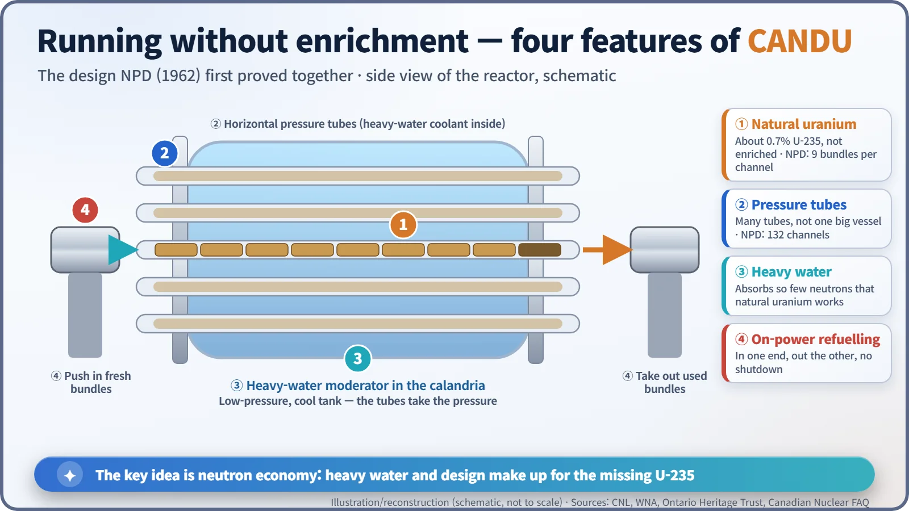
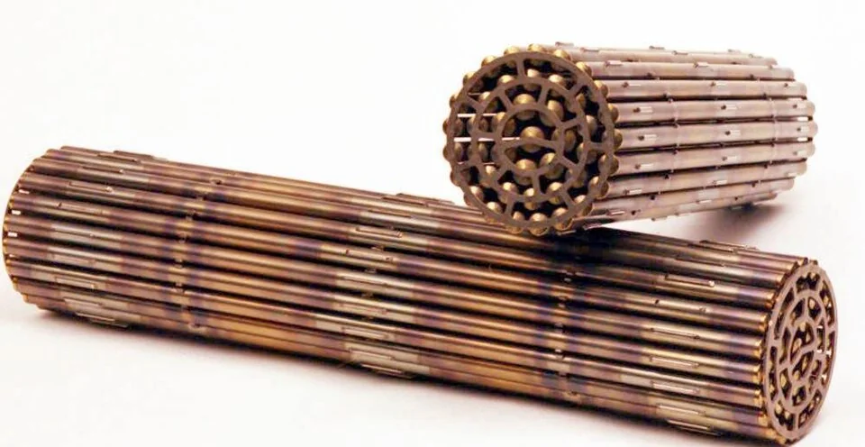
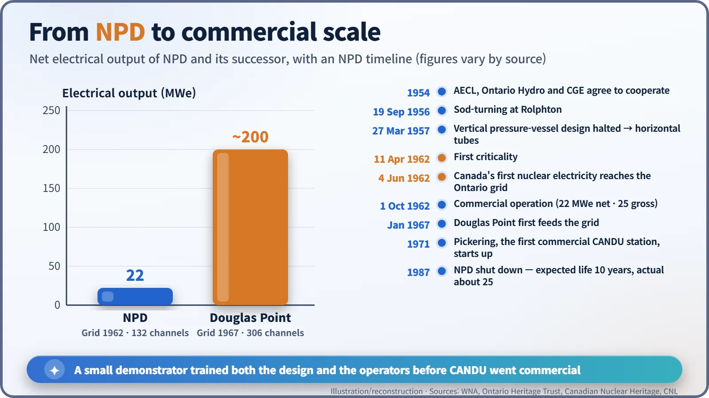

Nuclear History · 191
The First Light Without an Enrichment Plant: Canada's NPD and the Birth of CANDU (1962)
A 20-megawatt-class plant on the Ottawa River showed that natural uranium, heavy water, pressure tubes and on-power refuelling could make electricity, and trained the people who ran Canada's CANDU fleet.
Canada had no uranium enrichment plant, so it built its nuclear power on natural uranium and heavy water instead. The small Nuclear Power Demonstration (NPD) reactor at Rolphton, Ontario, went critical on 11 April 1962 and sent Canada's first nuclear electricity to the grid on 4 June 1962. Its pressure tubes, heavy-water moderator and on-power refuelling became the template for CANDU.
Two roads to nuclear electricity
A country that wanted nuclear electricity in the 1950s faced, broadly, two roads. One was to enrich uranium: to raise the share of easily split uranium-235 from the 0.7% found in nature to a few per cent. The other was to use uranium just as it comes out of the ground and make the reactor itself far more demanding. [5] [6] Only a handful of countries could make enriched uranium in quantity in the 1950s, and Canada had no enrichment plant at all. What it did have, from the war years, was a skill: handling heavy water.
From a pile in the woods to a power station
During the war, at Chalk River in Ontario, Canada had brought a small natural-uranium, heavy-water reactor to life, and from 1947 it ran the research reactor NRX. In the early 1950s the physicists W. Bennett Lewis (1908–1987) and George C. Laurence argued that it was time to use reactor heat to make electricity. [3] From 1952 Lewis was vice-president for research and development at Atomic Energy of Canada Limited (AECL), and he steered the country down this road. [7]
Talks that began at the end of 1952 hardened in 1954 into a partnership of three: AECL; the Hydro-Electric Power Commission of Ontario (later Ontario Hydro); and Canadian General Electric (CGE), which would build the equipment. A Nuclear Power Branch was set up at Chalk River, led by Harold A. Smith of Ontario Hydro. The project was called NPD, for Nuclear Power Demonstration. An Ontario Hydro study in 1953 had looked at a 5-megawatt station; the design grew to about 20 megawatts. [2]
Tearing up the design after the groundbreaking
On 19 September 1956 the ground was ceremonially broken at Rolphton, on the Ottawa River upstream of Chalk River. But the design of that day was not the CANDU we know. It put vertical fuel rods inside a thick steel pressure vessel, with walls about 13 cm thick. [2]
The problem was size. Future stations of several hundred megawatts would need an enormous pressure vessel, and this approach could not be scaled up. [3] On 27 March 1957 work on the design stopped, and a new layout took over: the reactor was laid on its side. [7] Instead of one huge pot holding all the pressure, many slender tubes would each carry a share of it. These are the horizontal pressure tubes. Lewis championed the idea, and information from testing US naval submarine fuel in NRX also reportedly fed into the decision. [2]
Four secrets of CANDU
The new NPD combined every feature that would define CANDU.
- Natural-uranium fuel: pellets of uranium oxide, baked like ceramic, sealed in zirconium-alloy tubes and bundled into short fuel bundles.
- Horizontal pressure tubes: NPD had 132 fuel channels, each holding nine bundles. [3] [7]
- A heavy-water moderator: the pressure tubes run through a low-pressure tank called the calandria, filled with heavy water. The coolant flowing through the tubes was heavy water too.
- On-power refuelling: without shutting the reactor down, machines push fresh bundles in at one end of a channel and take spent ones out at the other.

The art of not wasting neutrons
What ties the four together is neutron economy: not wasting neutrons. The hydrogen in ordinary water swallows a fair number of neutrons; heavy water absorbs hardly any. Zirconium alloys absorb few as well. [5] With only 0.7% uranium-235 in the fuel, a chain reaction cannot afford to throw neutrons away. In effect, Canada traded the cost of an enrichment plant for heavy water and careful design. It was not free: the cost of producing heavy water ate into the savings on fuel. [6]

4 June 1962: power to the Ontario grid
NPD went critical on 11 April 1962. On 4 June 1962 Canada's first nuclear electricity flowed into the Ontario grid. Commercial operation began on 1 October that year, at 22 megawatts net and 25 megawatts gross. [1] Some sources give 19.5 or 20 megawatts; the difference is mostly about which output is being counted. [4] [7]
It was not a world first. The Soviet Union's Obninsk, Britain's Calder Hall and America's Shippingport had all come earlier, each a "first" by its own yardstick. NPD's importance lay not in its place in the queue but in its method: it showed in practice that nuclear power was possible without enrichment. Even the name CANDU spells out that road: CANada, Deuterium, Uranium. [3]
What a small plant grew
NPD made more than electricity. Ontario Hydro set up a training programme soon after it started, and NPD became the school where Canadian and overseas CANDU operators learned their trade. It was also a test bed for new fuels and materials. [4] [7]
The next steps came quickly. The Douglas Point station, of about 200 megawatts, first sent power to the grid in January 1967, and in 1971 Pickering, the first commercial CANDU station, started up. [3] [6] In 1962 NPD had been expected to last ten years; it ran for about 25 and was shut down in 1987. [2] Its fuel has all gone to Chalk River, and a plan to deal with the remaining underground structure is still under regulatory review. [4]
